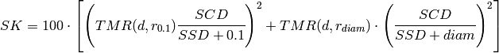

In addition to the given monitor units a number of other parameters are also calculated. These can generally be derived from the equations given previously but for completeness will be given here.
Equation 3 from Quality Assurance on Single Beam treatments is used to calculate the proportion of dose at 1 mm below the skin surface. The result is expressed as a percentage. Contributions from all beams are considered giving:
(1)
This result should be viewed as an approximation only as the TMR’s can be quite inaccurate near the skin surface.
This is an estimate of the percentage depth dose to the tumour. For a single field it is:
(2)
For opposing fields it is:
(3)
For a single field the percentage maximum dose %DD is the dose at Dmax. For other SSD’s an inverse square correction factor needs to be made giving:
(4)
When parallel opposing fields are used the contribution from the other beam must be taken into account and equation 4 from Quality assurance on parallel opposing beam treatments holds, giving:
(5)
This is the dose at dmax. For parallel opposing fields the contribution from both beams must be taken into account.
(6)
Note that if compensators are used the maximum dose and the reference dose are adjusted for the attenuation due to the compensator.
The reference dose is the dose at dmax for one beam. Thus, for single beam treatments the maximum dose and the reference dose will be the same. For parallel opposed treatments the reference dose is the dose at dmax for the given beam without any other contributions. This should correspond to the in- vivo diode reading assuming the diodes have been calibrated to give a reading of 100 cGy at 100 cm SSD for a 10x10 cm field.
(7)